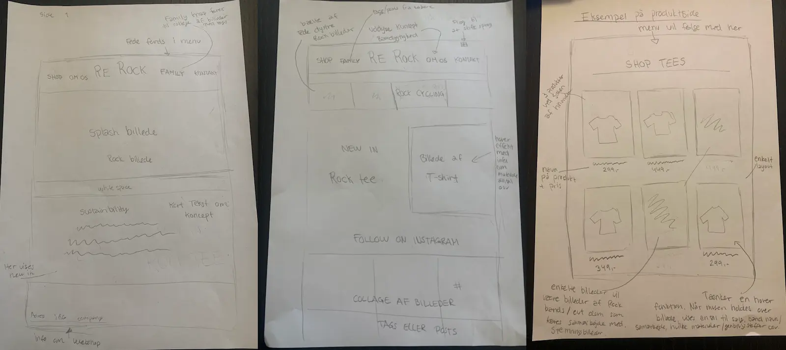
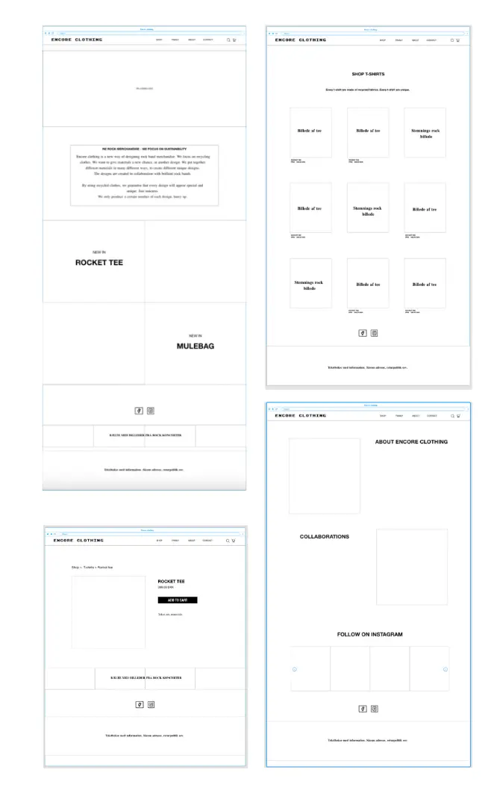
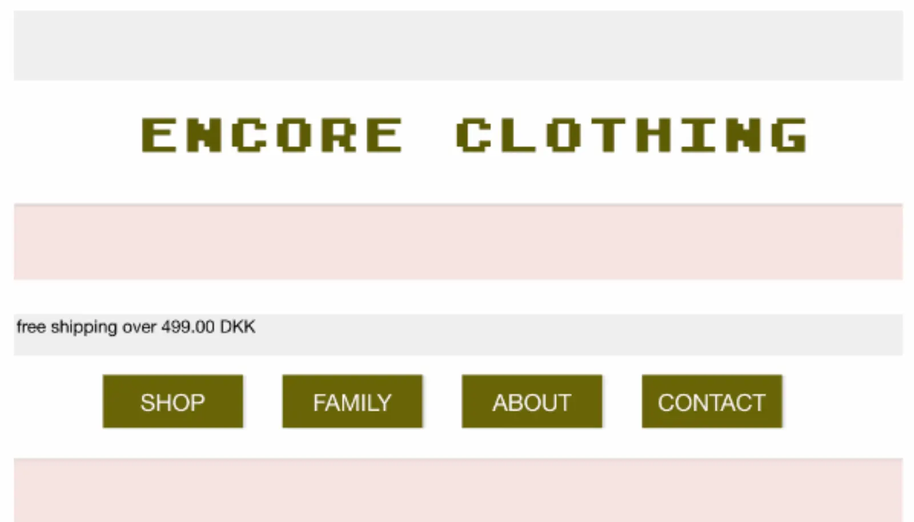
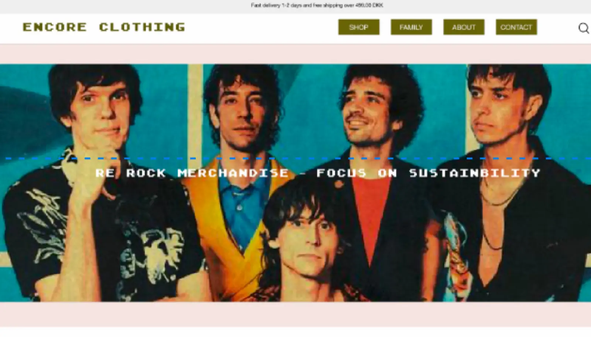

TEMA 3 - GRUNDLÆGGENDE UX
ENCORE CLOTHING
Temaet UX skaber en grundlæggende forståelse for samspillet mellem brugere og brugergrænseflader, samt hvilke teorier, værktøjer og metoder jeg kan benytte til research, design og test i en digital produktudvikling. Jeg har tildraget mig viden og metoder omkring hvordan jeg kan teste mit produkt - det er nemlig vigtigt at de designvalg og den produktudvikling som jeg foretager mig, baseres på konkrete indsigter om reelle brugere.
Jeg besluttede mig for at sælge rock merchandise, hvor jeg netop ville genbruge gammelt tøj og påsætte rockmotiver, samt lave samarbejder med rockbands.
Min målgruppe var altså rockmusik interesserede.
Hvis vi skal snakke om design, er der her gjort brug af forskellig metoder for at nå frem til resultatet.
Jeg har bl.a. udarbejdet moodboard, styletile og designet en lofi prototype skitser samt hifi prototype. Alt dette var for at skabe rammerne omkring sitet,
altså for at finde frem til udtrykket og stilen.
Herefter er der foretaget nogen test metoder af sitet/interview metoder, for netop at optimere sitet og ramme målgruppen endnu bedre.
MOODBOARD
STYLETILE
LOFI & HIFI PROTOTYPE
LOFI PROTOTYPE SKITSE
HIFI PROTOTYPE
TESTMETODER
TÆNKE-HØJT-TEST
I denne opgave blev jeg bl.a. introduceret til testmetoden ‘tænke-højt-test’. Jeg udførte testen på den måde at vi sad i grupper, og så skulle en stille forskellige opgaver til testpersonen, imens testpersonen bevæger sig rundt på min prototype og tænker højt undervejs. Dvs. man tydeligt får fokus på testpersonens førstehåndsindtryk af sitet - hvad fungerer og hvad fungerer ikke?
ÆNDRINGER PÅ BAGGRUND AF TÆNKE-HØJT-TEST
Mere luft omkring menubar/logo.
Ny farve på teksten henover herobillede.
SURVEY
Dertil gjorde jeg brug af metoden survey. Her ville jeg gerne blive klogere på t-shirt markedet generelt og på hvordan copy- og micro
copywriting, i samspil med UI konventioner, har betydning for brugerens oplevelse af et digitalt produkt.
b.la. ved hjælp af brugerens rejse på et website.
Jeg udviklede et spørgeskema som jeg fik folk inden for målgruppen til at svare på.
ÆNDRINGER PÅ BAGGRUND AF SURVEY
Ud fra min survey blev det tydeliggjort at det for køberen har stor betydning at der bl.a. er fri/billig fragt, og kort leveringstid. Derfor fik jeg anledning til at implementere dette på mit site. Med dette vil jeg netop motivere kunden til at købe.
LINK TIL PITCH
LINK TIL PITCH AF ENCORE CLOTHING
https://docs.google.com/presentation/d/1uFBpvzikoOaE5jHyU0UO3Vld2TUrXK_ftCaIHXcoKTU/edit?usp=sharing
LINK TIL RESULTAT
T-SHIRT SHOP PROTOTYPE I XD
https://xd.adobe.com/view/26ea7079-31e5-49a9-b919-cc2fd3460cb4-73b9/?fullscreen